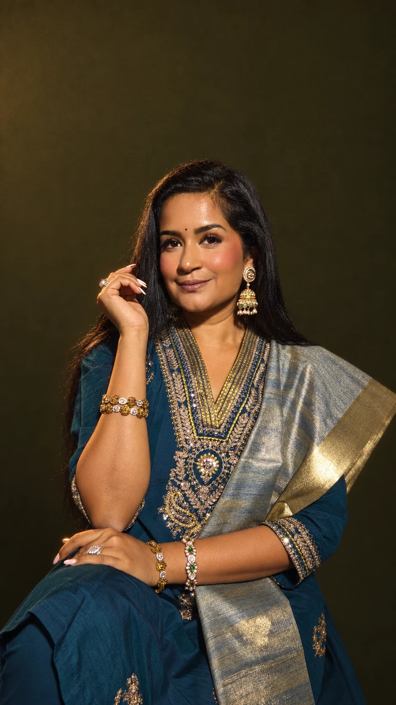

Find your mood.
Browse the images and choose the lighting, styling, or atmosphere that speaks to you.
A collection of photo prompts I've used as a fashion creator on @anuwaytostyle, now available for you!
Find a look you love. Copy the prompt.
Make it your own.

From cinematic film to quiet luxury.
Every image has a prompt behind it.
No looks match your search. Try another word or explore the full edit.
The collection couldn’t load. Please refresh to try again.
No secret formula. Just a photo, a prompt,
and a little experimentation.
Browse the images and choose the lighting, styling, or atmosphere that speaks to you.
Open a look to read the full prompt, then copy it with a single click.
Upload your own photo to ChatGPT’s image tool and paste the prompt. Adapt details to suit your image.